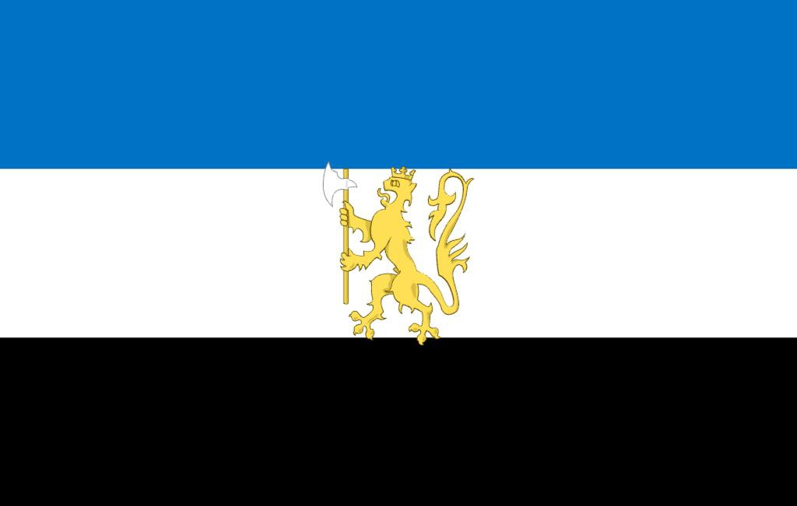

Корленская Федерация
Корленская Федерация (англ. Korlen Federation, сокращённо КФ (англ. KF), или Корлен (англ. Korlen)) — государство в Нореме. Площадь — 12млн. км². Население — чуть более 450 млн человек (2074). Корленская Федерация — парламентская республика, с идеологией либерализм, которая административно состоит из 45 регионов.
Информация о Стране

| Дата образования | 2036 год |
| Официальный язык | Английский, Корленский, Немецкий |
| Столица | Линбург |
| Крупнейшие города | Линбург, Читинск, Чиплин, Христанскберг |
| Форма правления | парламентская республика |
| Государственный строй | Федерализм |
| Президенты | Билли, Ангела Меркель, Кир Стармер, Роберт Прайм, Роберт Фицо |
| Спикер парламента | Джордан Стерлинг |
| Председатель Верховного суда | Ян Питерсон |
| Территория | 5 120 517 км² |
| Население | ↗ 450 235 257 чел. |
| ВВП | ↗ 45 трлн $ |
| ВВП на душу населения | ↗ 99 200 $ |
| Домен | .kn |
| Валюта | D (Дельвар) |
| Код ISO | Korlen |
| Автомобильное движение | Справа |
Экономика
Полупроводники, автомобили, электроника, мебель, строительные материалы, металлургия, сельское хозяйство, IT сфера, банковское дело, продажа ресурсов, фармацевтика, химия.